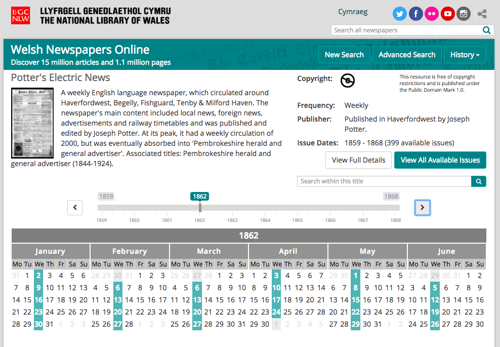
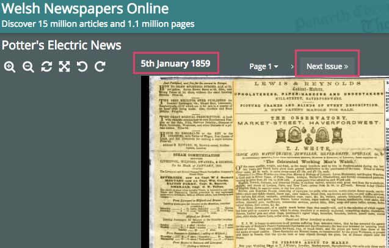

These implementation notes are provided by the IIIF newspapers community group. See also: Newspaper structure mapped to IIIF.
When implementing IIIF with newspaper content, there are a few implementation patterns that are particularly helpful for newspaper support, and these notes detail some of them to ensure consistency.
These notes are in no way extending the IIIF standard and if inconsistencies are found please report to iiif-discuss@googlegroups.com.
This scope of this guide provides examples for newspaper implementations in the presentation API to especially enhance access to newspaper content, representing implementation use cases 4-7. While the IIIF Image API is essential for transfer of image pixels, the IIIF Presentation API is also especially important for newspapers specifically because it provides the ability to indicate structure and viewing order for complex objects and supports an annotation layer that is integral for OCR text.
The guidance below provides an on-ramp for IIIF compatibility for newspapers, highlighting various levels of compliance with the IIIF spec. Each suggestion provides: a use-case, known viewer support (Mirador and Universal Viewer were tested; other IIIF viewers may also provide solutions), solutions to the use case, notes, and examples.
Use case: I want to browse Newspapers published between certain dates. I want to browse through issues of a Newspaper in chronological order.
Viewer support: Issue date is supported in the Universal Viewer (UV) and allows you to navigate issues by date.
Solution: Newspapers should provide a navDate in the issue level manifest. See navDate from IIIF specification and example below:
{
"@context": "http://iiif.io/api/presentation/2/context.json",
"@id": "http://dams.llgc.org.uk/iiif/newspaper/issue/3100021/manifest.json",
"@type": "sc:Manifest",
"label": "Potter's electric news (1859-01-05)",
"navDate": "1859-01-05T00:00:00Z",
"metadata": [
…
IIIF Collections for Newspaper Titles may also have a navDate in the manifest section for example:
{
"@id": "http://dams.llgc.org.uk/iiif/newspaper/issue/3100021/manifest.json",
"@type": "sc:Manifest",
"navDate": "1859-01-05T00:00:00Z",
"label": "Potter's electric news (1859-01-05)"
},
from http://dams.llgc.org.uk/iiif/newspapers/3100020.json.
Note about Editions: For editions, a temporal value can be inserted to enforce navigation order. navDate is, by definition, not an assertion of when an issue was published, therefore, you can use a 06:00 timestamp for a morning edition and a 17:00 for an evening edition to provide browse order.Example Implementation:

Use case: I would like to be able to link to OCR for a Newspaper page. The OCR may contain information not contained in Annotations (e.g. OCR confidence in ALTO).
Viewer Support: Currently unsupported in viewers although the seeAlso is meant as a “A link to a machine readable document” not for display to a user. If you would like to let users download OCR files you should use the rendering field: http://iiif.io/api/presentation/2.1/#rendering.
Recommendation: It is possible to link OCR documents to a IIIF canvas by adding a seeAlso field see canvas and seeAlso from the IIIF specification. Examples for ALTO, hOCR, and plain text:
seeAlso: {
@id: "http://wellcomelibrary.org/service/alto/b19956435/0?image=0",
format: "application/xml",
profile: "http://www.loc.gov/standards/alto/",
label: "ALTO XML"
},
Example implementation: To be added; 2017-10-10.
seeAlso": [ {
"@id": "https://ocr.lib.ncsu.edu/ocr/nu/nubian-message-2003-04-01_0002/nubian-message-2003-04-01_0002.hocr",
"format": "text/vnd.hocr+html",
"profile": "https://github.com/kba/hocr-spec/blob/master/hocr-spec.md",
"label": "hOCR"
},
Example implementation:
seeAlso": [ {
"@id": "https://ocr.lib.ncsu.edu/ocr/nu/nubian-message-2003-04-01_0002/nubian-message-2003-04-01_0002.txt",
"format": "text/plain",
"label": "plain text OCR"
},
Example implementation:
Use case: I want text associated with areas of an image, including OCR and transcription.
Viewer support: Universal Viewer and Miradaor
Solution: Use W3C Web Annotations with annotation lists and annotations. Note: IIIF is transitioning from the recommendation to use Open Annotations, which were superseded by Web Annotations in Presentation API 3.0. The following example is a word-level open annotation:
{
"@context":"http://iiif.io/api/presentation/2/context.json",
"@id":"http://dams.llgc.org.uk/iiif/4342443/annotation/list/ART8.json",
"@type":"sc:AnnotationList",
"resources":[
{
"@id":"http://dams.llgc.org.uk/iiif/4342443/annotation/2003468828629",
"@type":"oa:Annotation",
"motivation":"sc:painting",
"resource":
{
"@type":"cnt:ContentAsText",
"format":"text/plain",
"chars":"SIEraOROLlOIOAt,"
},
"on":"http://dams.llgc.org.uk/iiif/4342439/canvas/4342443#xywh=2003,4688,286,29"
},
{
"@id":"http://dams.llgc.org.uk/iiif/4342443/annotation/2308468424928",
"@type":"oa:Annotation",
"motivation":"sc:painting",
"resource":
{
"@type":"cnt:ContentAsText",
"format":"text/plain",
"chars":"OBSERVATIONS,"
},
"on":"http://dams.llgc.org.uk/iiif/4342439/canvas/4342443#xywh=2308,4684,249,28"
},
Example implementation: To be added after transition from Open Annotations to Web Annotations is confirmed.
Resources to convert ALTO to annotations: To be added soon; 2017-10-10.
Use case: I would like to share multiple version of the same annotation list with different specificities so for example I might have:
a word level annotation list for harvesting by Europeana
a line level annotation list for use in Mirador
a paragraph annotation list for OCR correction.
I would like to be able to link to these options to allow the client to decide which ones they want to use.
Solution: TBD; active discussions in Text Granularity Working Group. See also: https://github.com/IIIF/iiif.io/issues/764.
Use case: I would like to display the articles contained in a newspaper page including any OCR text associated with that article.
Viewer Support: The UV and Mirador display the articles but if you click on the headings you are not taken to the article.
Solution: Articles should be modeled by adding a range to the issue manifest. The canvases list should link to areas of the canvas that are part of this article. The contentLayer should contain a link to the annotationLayer for the article. More about ranges: https://github.com/IIIF/iiif.io/issues/645
"structures": [ { "@id": "http://dams.llgc.org.uk/iiif/3100021/article/ART1", "@type": "sc:Range", "label": "Advertising", "canvases": [ "http://dams.llgc.org.uk/iiif/3100021/canvas/3100022#xywh=588,2844,9951,20412" ], "contentLayer": [ { "@id": "http://dams.llgc.org.uk/iiif/3100021/annotation/layer/ART1.json", "@type": "sc:Layer", "label": "OCR Article Text" }] },
Canvases can link to the annotations that are contained in page by:
"otherContent": [ { "@id": "http://dams.llgc.org.uk/iiif/3100022/annotation/list/ART1.json", "@type": "sc:AnnotationList", "label": "Advertising", "within": { "@id": "http://dams.llgc.org.uk/iiif/3100021/annotation/layer/ART1.json", "@type": "sc:Layer", "label": "OCR Article Text" } },
Example Implementation:
Issue / IIIF Manifest: http://dams.llgc.org.uk/iiif/newspaper/issue/3100021/manifest.json
Use case: Some of my newspaper articles span across pages and I would like to reflect this using IIIF.
Viewer Support: No implementation identified to test.
Solution: Use a Range within your structures and for the canvases property list out each of the fragments of the canvases that belong to the same article. The following is an example if the article crossed two pages:
"structures": [
{
"@id": "http://dams.llgc.org.uk/iiif/3100021/article/ART1",
"@type": "sc:Range",
"label": "Letters to the Editor",
"canvases": [
"http://dams.llgc.org.uk/iiif/3100021/canvas/3100022#xywh=588,2844,9951,20412",
"http://dams.llgc.org.uk/iiif/3100021/canvas/page2#xywh=0,0,100,100"
],
"contentLayer": [
{
"@id": "http://dams.llgc.org.uk/iiif/3100021/annotation/layer/ART1.json",
"@type": "sc:Layer",
"label": "OCR Article Text"
}]Example Implementation:
No specific implementation identified as of 2017-10-10.